In this article, I will summarize my 3 week travel to Red Rock Canyon, Death Valley, Zion, Bryce Canyon, Grand Staircase, Glen canyon, Horseshoe bend, Grand Canyon, Yosemite, Sequoia, Kings Canyon, Pinnacles, California Coastal National Monuments, Muir Woods, Yellowstone, Grand Teton, Arches, and Canyonlands. National parks in vicinity often have similar landscapes, so it's best to spread out your visits to keep things interesting. Summer offers optimal access to national parks, yet rising temperatures due to global warming can lead to excessive afternoon heat. To beat the heat, I scheduled early morning and evening hikes. Afternoons were for resting or exploring viewpoints.
Week 1: Starting from Las Vegas, I explored Red Rock Canyon, Death Valley, Zion, Bryce Canyon, Grand Staircase, Glen canyon, Horseshoe bend and the Grand Canyon.
Trip to famous national parks in United States
Avoid monotonicity
Locations for week 1

Viewpoint on the scenic route of Red rock canyon national conservation area.

Zabriskie point in Death valley.

Observation point in Zion national park.
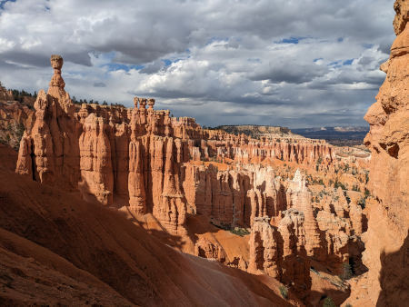
Ampitheathre in Bryce canyon national park.

Balanced rock in Glen canyon national recreation area.
Horseshoe bend.

Toadstool in Grand staircase national monument.

Grand canyon.
Week 2: Starting from Sacramento, I visited Yosemite, Sequoia, Kings Canyon, Pinnacles, Santa Barbara, California Coastal National Monuments, and Muir Woods.
Locations for week 2
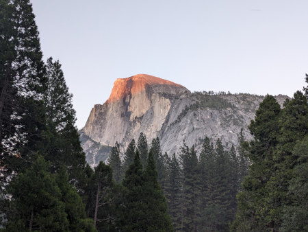
Half dome in Yosemite national park.
Recommended hikes in Yosemite national park: Lower Yosemite trail (easy), Vernal and Nevada fall trails (difficult), Sentinel dome and Taft point (moderate).
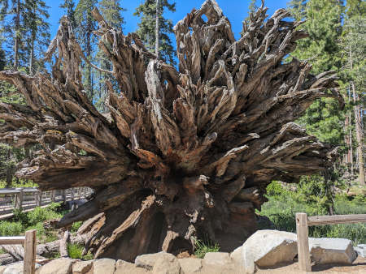
A fallen tree in Sequoia national park.
Recommended hike in Sequoia national park: Moro rock (easy).

Seals on one of the California coastal national monuments.

Pinnacle national park.
Recommended hike in Pinnacle national park: Balconies cliffs-Cave loop (moderate).

Short detour to San Franscisco.

Muir woods.
Locations for week 3

Grand prismatic spring in Yellowstone national park.
Recommended hikes in Yellowstone national park: Grand canyon of the Yellostone (easy), Avalanche (difficult).

Grand Teton national park.
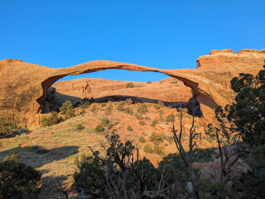
Landscape arch in Arches national park.
Recommended hikes in Arches national park: Delicate arch (moderate), Double arch(moderate), Landscape arch (easy).

Canyonlands national park.
Photo gallery


 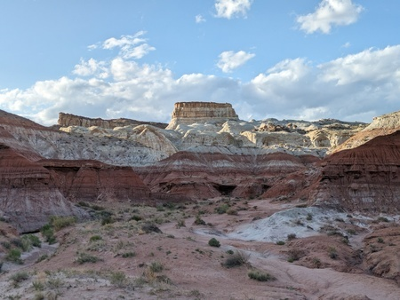
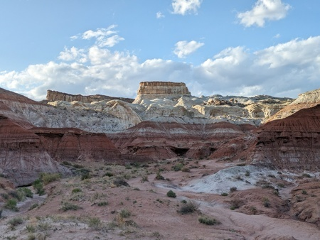


 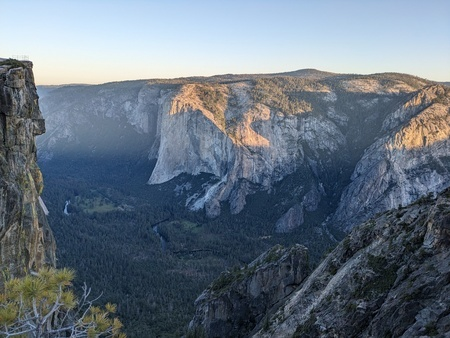
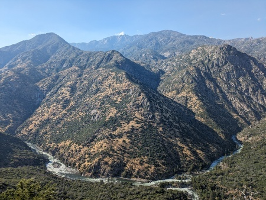
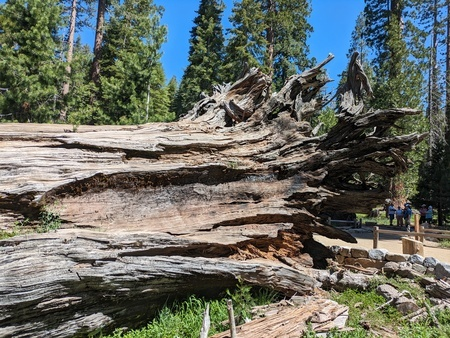
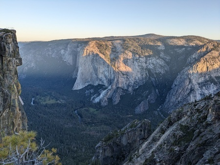
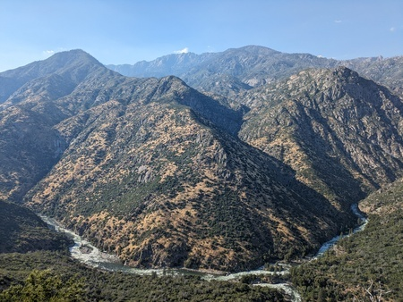
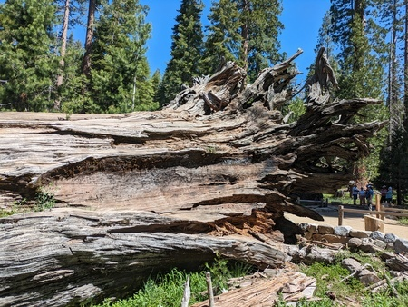
 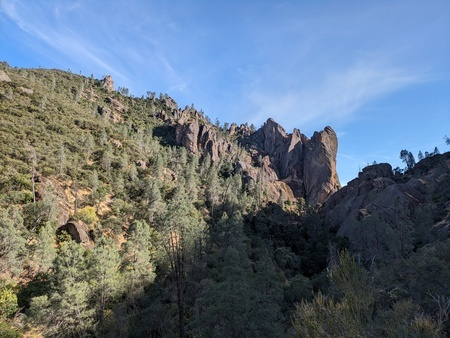
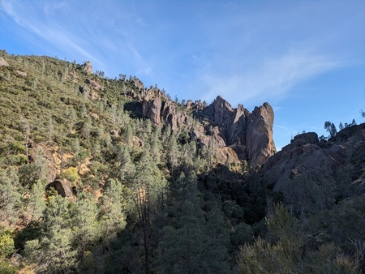


 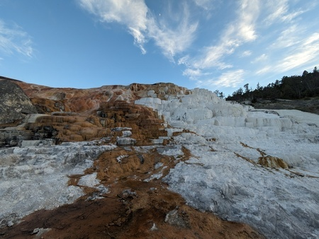
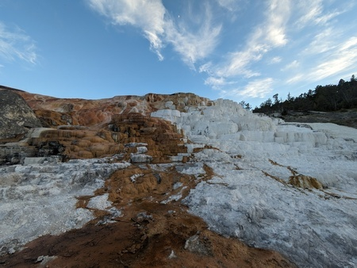


Flying to different places
I used Frontier's Go Wild one-month pass to visit Las Vegas, Sacramento, and Salt Lake City. The pass offers cheap flights but can only be booked one day in advance and has blackout dates. Their flight seats don't recline, making them uncomfortable but bearable for short flights. I always bought a carry-on bundle for blankets. In the middle of my trip, Frontier hiked the price for a carry-on from $30 to $40. While booking, I chose transit airports with lounge facilities, especially Denver with its Capital One lounge. Notably, Frontier supports TSA Pre for expedited security checks.
National parks entrance fees and reservation
Some national parks require reservations for crowd control, in addition to entrance fees. For visits to multiple national parks, consider buying an annual pass. Alternatively, you can enter national parks for free and without reservations by entering outside of their working hours.

Annual pass for national parks in USA.
Which car to rent?
I am 5'11" and I could sleep comfortably in a standard SUV (Hyundai Santa Fe). In an intermediate SUV (Toyota RAV4), my foot was hanging out, so either I had to sleep diagonally or put some luggage below my foot. Both of these options can accomodate two adults for sleeping.
What to pack?
For car camping, it is recommended that one carries a thick blanket to use it as a bedding. More blankets may be required depending on the weather.

Car camping in a SUV (Source: Microsoft image generator).
Car insurance
Most rental companies offer car damage waiver and third-party liability insurance, but it's expensive. Instead, get a credit card that includes free car insurance, such as those from Capital One, Chase, or American Express. Alternatively, AAA membership provides these insurances with additional benefits at a better price.
What to eat?
Tortillas, canned foods, and ready-to-eat noodles (you can usually find hot water at gas stations or grocery stores in national parks). Bring fruits for easy snacks. If you can buy a portable gas stove and cylinder, you can cook regular meals, though I didn't try this. Plastic utensils are available at Walmart, gas stations, or delis.
How to manage stuffs in your car?
Bring a couple of trash bags for waste and dirty laundry. Trash bins are easy to find, but laundry machines in national parks are rare.
Exploring national parks
Check the National Park Service website and app for park info. Upon entry, you'll get maps and a newsletter with latest updates. For more details, talk to a ranger at visitor centers. For hiking, it is advised to download maps.me in advance as national parks have limited internet connectivity.